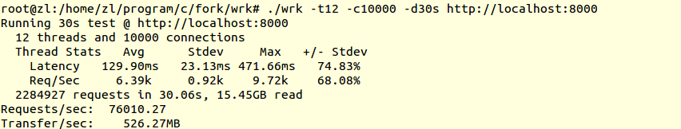

基于I/O多路复用epoll的并发http服务器。
$ make$ ./muse --helpUsage: muse [OPTION]--stop Stop muse.--restart Restart muse and reload config.json.--help Print usage.
需要使用root权限运行，使用SIGINT或muse --stop停止。
使用config.json作为配置文件，利用json-c(自己写的)解析，支持运行时更新配置。
支持配置如下：
采用多进程 + epoll实现并发，每个进程有一个事件循环。利用SO_REUSEPORT由内核实现简单的负载均衡。
利用状态机按行(\r\n)实现解析，一趟解析行，一趟解析报文，时间复杂度O(2n)。
使用时间堆(最小堆)管理连接，接受连接时会插入堆中，连接关闭会移出堆，超时连接会从堆顶移出。默认为长连接，请求不成功会关闭连接。
使用sendfile并设置TCP_CORK发送文件。

501 Not Implement。